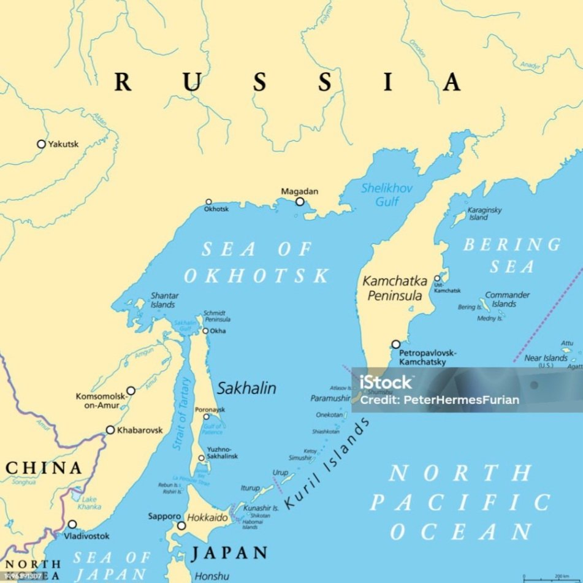
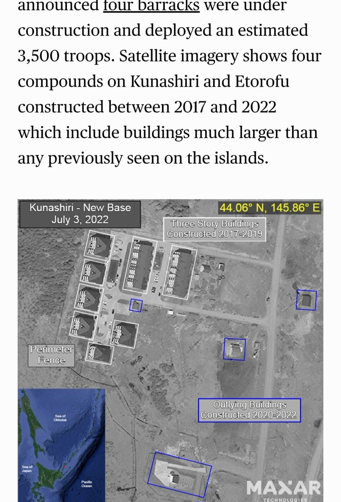
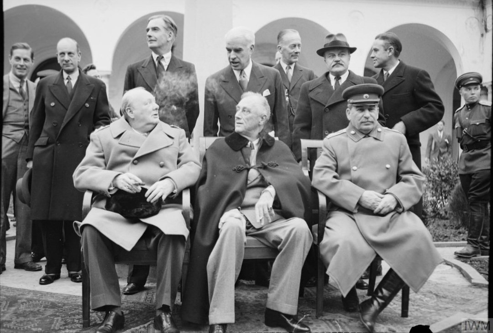
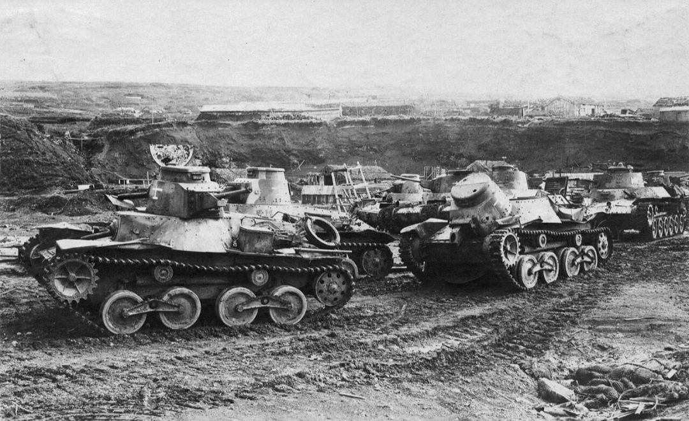
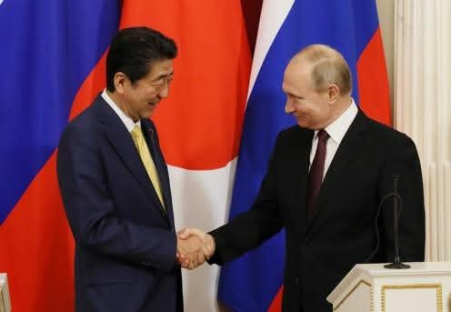
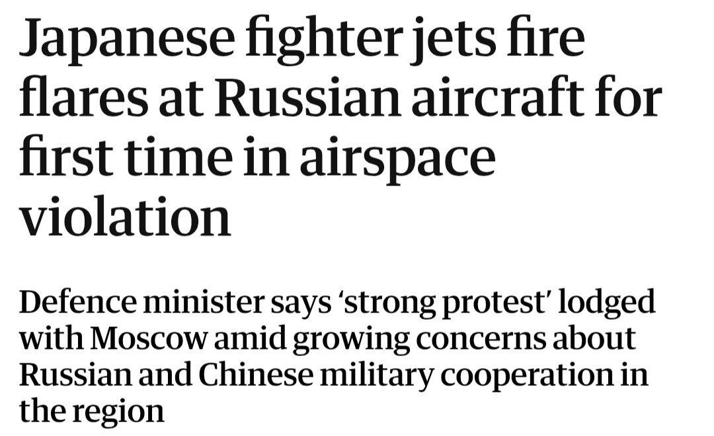
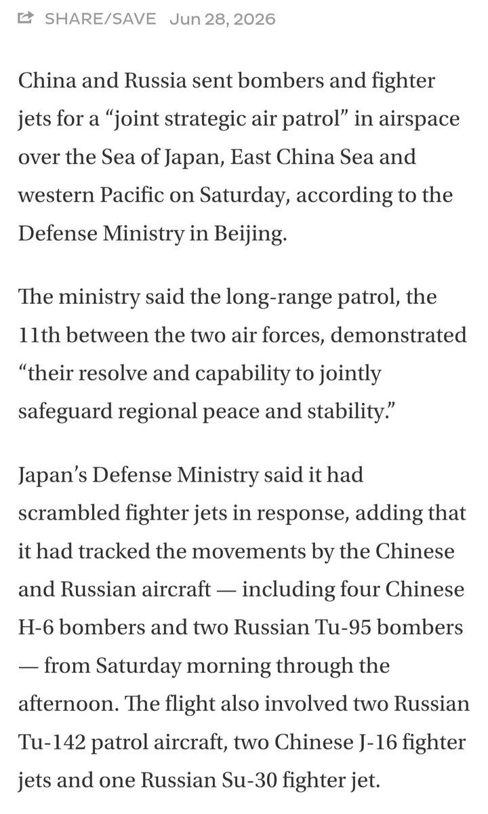

Nearly 80 years after WWII, Russia and Japan still haven't signed a peace treaty over four islands. Today, the Kurils are a military stronghold, a key naval gateway, and one of the Pacific's most strategic island chains.
Geography and Naval Access
The Kuril Islands stretch between Russia's Kamchatka Peninsula and Japan's Hokkaido. Their position separates the Sea of Okhotsk from the Pacific Ocean, giving them strategic importance for maritime access, naval operations and regional security.
The Sea of Okhotsk has long been one of Russia's most important naval operating areas. Several routes linking it to the Pacific pass through the Kuril chain, making the islands strategically valuable for the Pacific Fleet.

One passage is especially significant. The Bussol Strait is one of the deepest, year-round navigable routes between the Sea of Okhotsk and the Pacific Ocean. Its depth makes it suitable for large surface ships and submarines.
The islands also have economic value. Their waters support major fisheries, while Iturup's Kudryavy volcano is the world's only known natural source of the mineral rheniite, which contains rhenium — a rare metal used in aerospace and advanced industrial alloys.
Military Buildup
The islands' strategic importance grew during the Cold War. The Soviet Union increasingly used the Sea of Okhotsk as a protected operating area for its ballistic missile submarines, making control of the surrounding island chain even more significant.
Russia has continued investing in the islands. Over the past decade it has expanded military infrastructure, including upgraded airfields, new barracks, coastal missile systems and air-defense installations. Satellite imagery from CSIS shows a substantial increase in permanent facilities.

Origins of the Dispute: Yalta to 1945
This dispute didn't begin with the Cold War. To understand why the Kurils remain contested today, we need to go back to the final weeks of World War II, when control of the islands changed hands.
In February 1945, Allied leaders met at the Yalta Conference. One agreement was that the Soviet Union would enter the war against Japan after Germany's defeat. In return, the USSR would receive the Kuril Islands following Japan's surrender.

In August 1945, just days before Japan formally surrendered, Soviet forces occupied the southern Kuril Islands. The Japanese civilian population was forcibly repatriated in the years that followed, and Moscow has administered the islands ever since.

Japan never accepted Soviet sovereignty over the four southern islands. Tokyo calls them the Northern Territories. Russia calls them the Southern Kurils. That disagreement has prevented the two countries from signing a formal peace treaty to this day.
Decades of Diplomacy, Then a Halt
Despite the dispute, both countries kept talking. For decades, Moscow and Tokyo tried to find a diplomatic solution, hoping economic cooperation and political dialogue could eventually lead to a broader agreement.
Former Japanese Prime Minister Shinzo Abe made the issue a priority. Between 2012 and 2020, he met Vladimir Putin more than 25 times, making it one of the most intensive periods of Russia–Japan diplomacy since the Cold War.

The talks achieved some practical progress. Economic cooperation expanded, former Japanese residents were allowed visa-free visits, and both sides explored joint projects on the islands. But the central question of sovereignty remained unresolved.
By the early 2020s, negotiations had already slowed. Russia's full-scale invasion of Ukraine became the turning point. After Japan joined Western sanctions, Moscow suspended peace treaty talks, bringing years of diplomacy to a halt.
Fishing, Airspace and the Broader Security Picture
The dispute also affects people at sea. Russia suspended a 1998 agreement that had allowed Japanese fishermen to operate under agreed rules in waters around the disputed islands. Moscow cited technical and financial issues. Japan viewed the move as political retaliation.
Since then, Russian authorities have tightened enforcement in the surrounding waters. Japanese fishing boats operating without Russian authorization risk being intercepted, detained and fined by Russian border guards.
The dispute still spills into the skies. In September 2024, a Russian patrol aircraft entered Japanese airspace near Rebun Island three times. Japan responded by scrambling fighter jets and firing warning flares.

The Kurils now sit within a much broader security environment. Since 2019, Russia and China have carried out regular joint air patrols over the Sea of Japan and western Pacific. Their latest patrol prompted Japan to scramble fighter jets.

Strategic Value, Then and Now
For Japan, the islands remain occupied territory. For Russia, they help secure access between the Sea of Okhotsk and the Pacific and form part of a broader military posture in the Far East.
The islands also remain strategically valuable for reasons beyond military geography. Their surrounding waters support important fisheries, while their location influences maritime access, surveillance and regional security planning across Northeast Asia.
Nearly 80 years after World War II, the conflict itself is long over. The peace treaty was never signed. If tensions in the Pacific escalate, the Kurils will remain one of the region's key strategic locations.
For now, Russia's attention is consumed by Ukraine. But for Japan, the Kurils remain unresolved nearly 80 years on. As the Pacific draws broader strategic attention in the years ahead, these four islands will keep their military and naval value front and center.
A Note on Economics
There's a whole economic layer worth keeping in mind. Geological surveys estimate the islands hold gold, silver, titanium, natural gas, even geothermal potential — some older estimates put southern Kuril mineral wealth in the tens of billions. None of it is being extracted today.
Iturup's Kudryavy volcano holds the only known natural rheniite deposit on Earth, tied to rhenium used in jet engines and high-performance alloys. But it can't be mined right now. The rhenium forms inside an active volcanic crater, deposited from escaping gas vents rather than sitting in a solid ore body. The total quantity is tiny — estimated at only tens of kilograms — and extracting it would mean working inside an active, gas-venting crater with no existing infrastructure to support it.
The fishing grounds matter more right now, among the richest in the North Pacific, which is why Russia suspended Japan's 1998 fishing deal. And there's a human side too: Japanese families displaced in 1945 who still petition for return visits.
Interesting to keep an eye on, though time will tell.